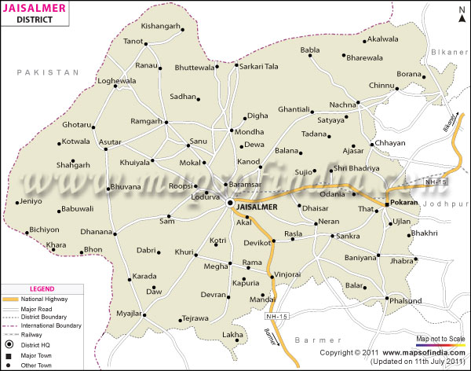

Jaisalmer is a town in Rajasthan known as a World Heritage Site. Jaisalmer stands on a ridge of yellowish sandstone, crowned by a fort. For people who like sun-drenched and parched places might find the rugged beauty of Jaisalmer very appealing. Best time to visit –October to March
Map:
